雲取山
| 日付 | 2007年6月2日（土） - 2007年6月3日（日） | ||||
|---|---|---|---|---|---|
| 山域 | 奥多摩 | ||||
| メンバー | グループ（男4女5） | ||||
| 山行形態 | 1泊2日小屋泊 | ||||
| アクセス | 電車、バス | ||||
| ルート (Map) |
|
【1日目】【2日目】
2日目
山荘からご来光を拝む。
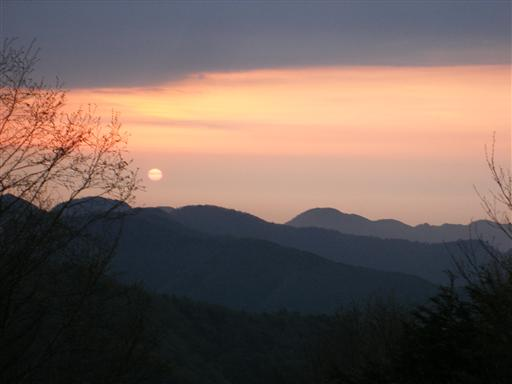
ご来光を拝む人々。皆早起きだ。
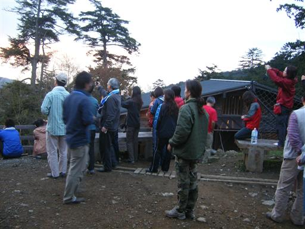
本日の天気も曇の予報で、上空は雲に覆われているが、
幸い東の空は晴れている。
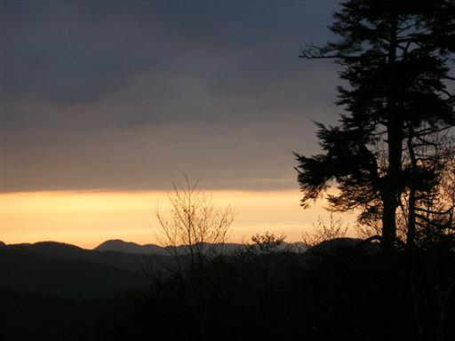
6:43 朝食を取って雲取山荘出発。
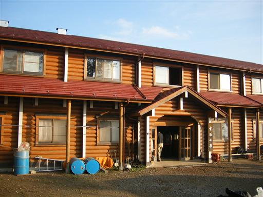
7:19 一登りで雲取山山頂到着。標高2017m。
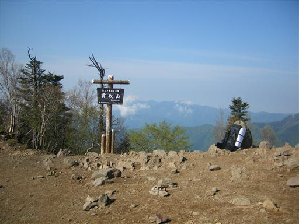
山頂からの景色。遠くの山は霞んで見えないが、展望はそこそこ。
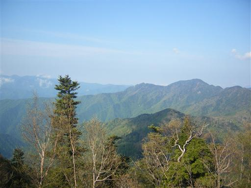
山頂の風景。
ほとんどの人はもっと早くに出発していたので、人影はまばら。
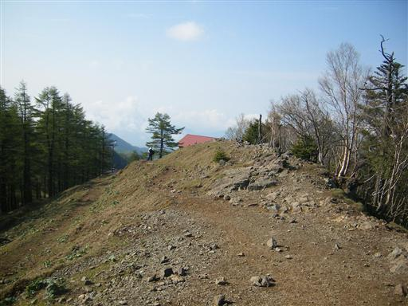
奥多摩の中核をなす石尾根。この尾根を下っていく。
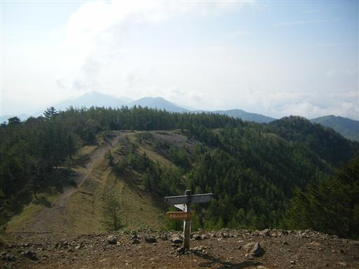
振り返ると青空が美しい。
右手に見えるのは避難小屋。
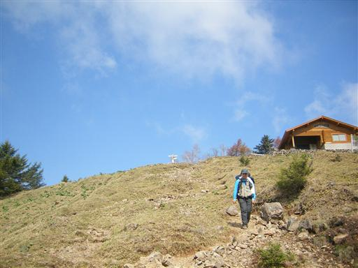
展望の良い尾根道をゆっくりと下っていく。
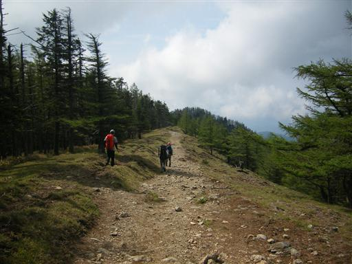
時間がたつにつれて、だんだん雲に覆われてきた。
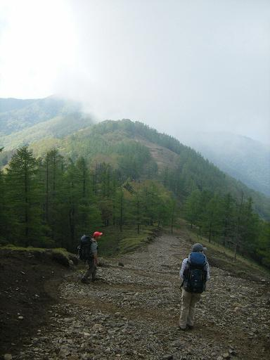
この山は植物の種類が豊富で、花もたくさん咲いている。
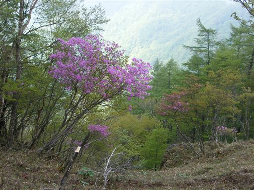
12:58 鴨沢に下山。
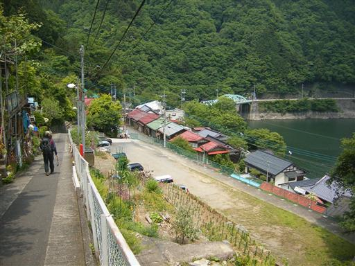